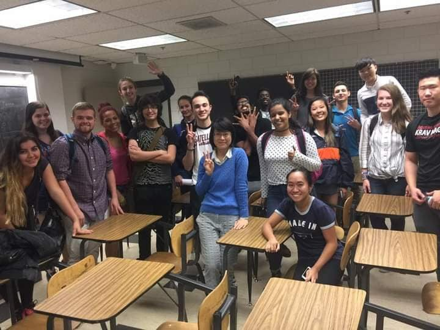

Teaching 教學
Teaching in the United States and Taiwan since 2013. Courses span sociological theory and methods, social policy, and — more recently — the social consequences of AI.

In the classroom
Two languages, two systems 在教室裡
From Principles of Sociology at the University of Florida to medical sociology and applied AI at Soochow University, the aim has stayed the same: help students see how structure works, and give them the tools to test it against data.
Two courses at Soochow are taught entirely in English, for international and exchange students.
Soochow University
2023 — presentDepartment of Sociology
Taught in English
Yuan Ze University
2021 — 2023Department of Social and Policy Sciences
United States
2013 — 2020University of Florida
College of Central Florida · Trinity Washington University · Santa Fe College
Santa Fe College
Trinity Washington University
Student Supervision
-
2026
顏珮安. When AI meets gender: How social media algorithms in Taiwan and South Korea reproduce or dissolve menstrual stigma. NSTC Undergraduate Research Grant, AY 2026. Approved.
-
2025
林姿妤. Menstruation, discipline, and the body politics of incarcerated women: A preliminary exploration. NSTC Undergraduate Research Creativity Award, 2025. Award
-
2025
楊美潁. Care predicaments and social construction among second-generation immigrant children and young carers. NSTC Undergraduate Research Grant.